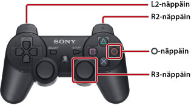

Tämän oppaan käyttö
Tämä opas sisältää yksityiskohtaisia PS3™-laiteohjelmiston käyttöön liittyviä tietoja. Lisätietoja laitteen toiminnoista ja turvallisesta käytöstä on järjestelmän mukana toimitetuissa ohjeissa.
Oppaan katselemista koskevat huomautukset
Suosittelemme, että teet seuraavat asiat, ennen kuin katselet opasta:
- Ota JavaScript käyttöön selaimessa. Jos JavaScript on poistettu käytöstä selaimessasi, opas voi näkyä väärin tai sitä ei ehkä voi katsoa lainkaan.
- Jos katselet opasta PC-tietokoneessa, käytä Microsoft Internet Explorer -selaimen versiota 6.0 tai uudempaa versiota.
Oppaan käyttäminen PS3™-järjestelmässä
Käytä alla olevia perustoimintoja, kun katselet opasta PS3™-järjestelmän  (Internet-selain) -toiminnon avulla.
(Internet-selain) -toiminnon avulla.
| Suuntanäppäimet | Siirrä osoitin linkin kohdalle. |
|---|---|
 -näppäin -näppäin |
Avaa linkki. |
| Oikea sauva | Vieritä mihin tahansa suuntaan. |
| L1-näppäin | Palaa edelliselle sivulle. |
Voit suurentaa näyttöä seuraavalla tavalla.

| Paina R3-näppäintä (oikea sauva) | Käytä suurennustoimintoa. / Palauta alkutila. |
|---|---|
| Pidä L2-näppäin / R2-näppäin painettuna suurennuksen aikana | Suurenna näkymää. / Pienennä näkymää. |
Pidä  -näppäin painettuna suurennoksen aikana -näppäin painettuna suurennoksen aikana |
Palauta alkutila. |
Oppaan näppäinsymbolien selitykset
PS3™-järjestelmän näppäimet, joita käytetään komentojen syöttämiseen ja peruuttamiseen, vaihtelevat alueen ja tuotteen mukaan. Tämän oppaan eurooppalaisissa versioissa viittaa komentojen syöttämiseen ja peruuttamiseen. Muiden kielten versioissa viittaa syöttämiseen ja peruuttamiseen.
Oppaan tulostaminen
Voit tulostaa oppaan tietokoneen avulla. Noudattamalla seuraavia ohjeita voit tulostaa useita sivuja kerralla:
1. |
Avaa [Oppaan hakemisto] Microsoft Windows Internet Explorer -selaimessa. |
|---|---|
2. |
Valitse Internet Explorer -selaimen Tiedosto-valikosta [Tulosta]. |
3. |
Valitse [Valinnat]-välilehti ja tulosta opas valitsemalla [Tulosta kaikki linkitetyt tiedostot] -valintaruutu. |